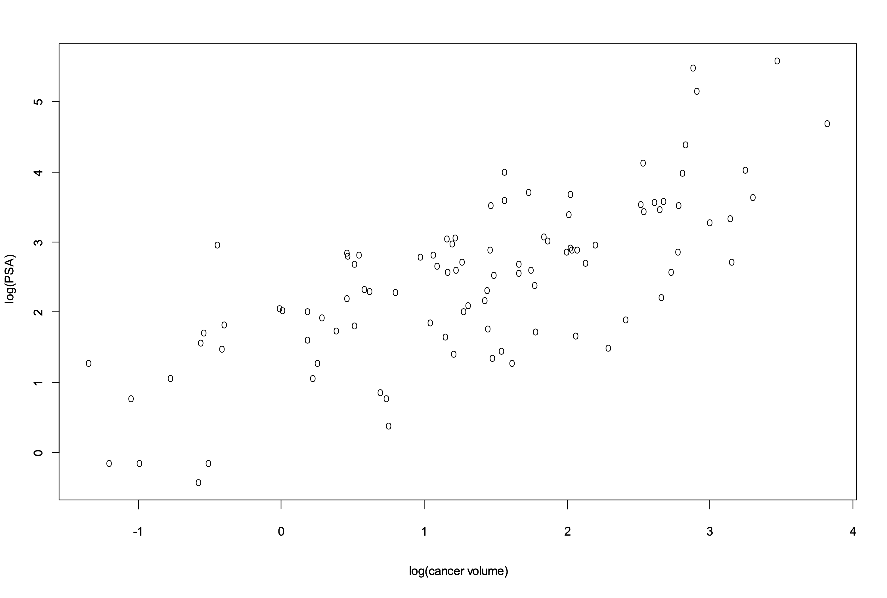
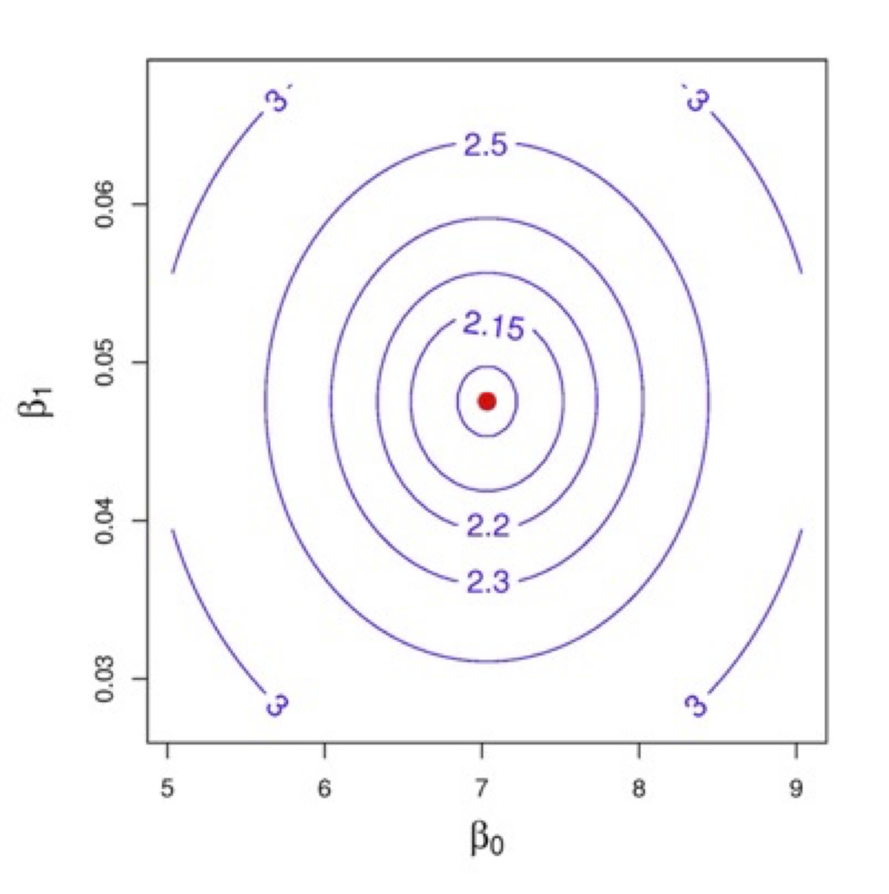
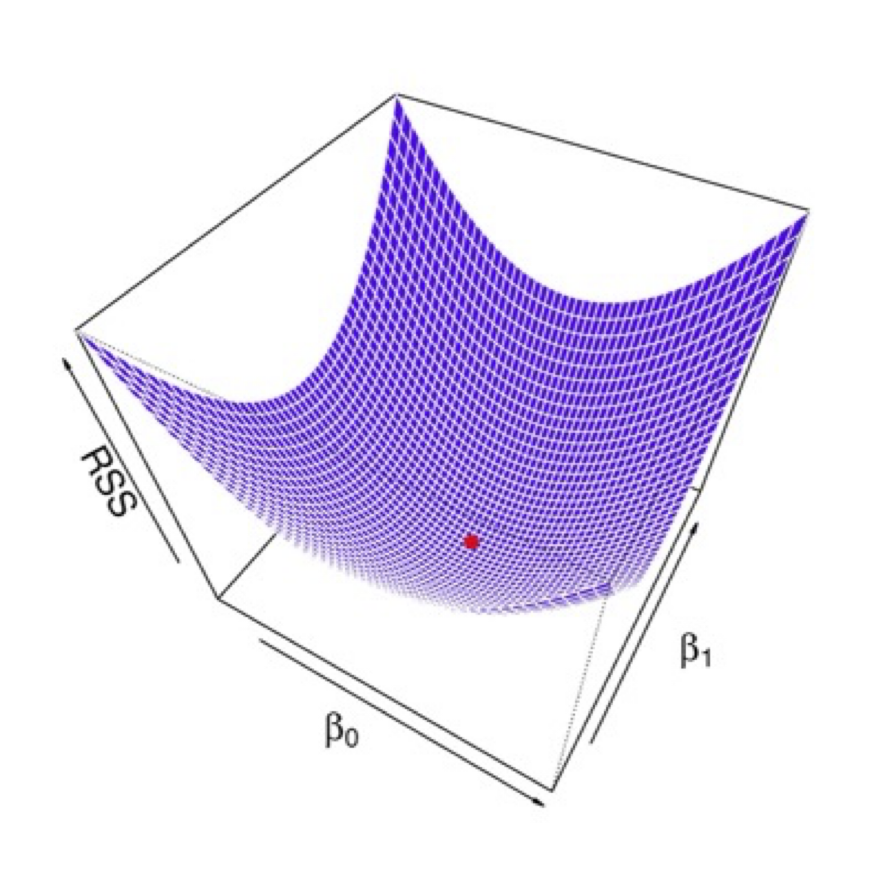
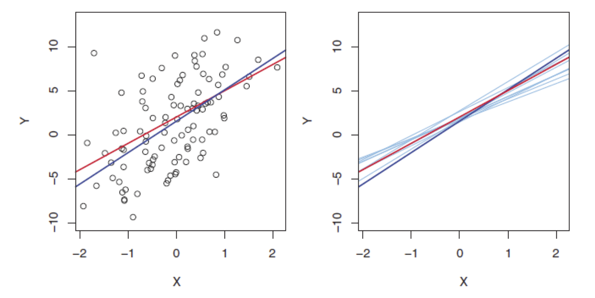
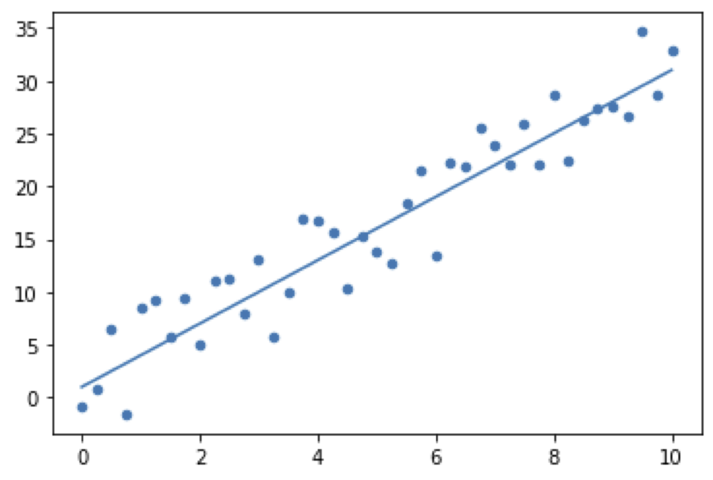

Fundamentals of
Data Analytics and
Predictions
Regression 1
Xi (Rossi) LUO
Department of Biostatistics and Data Science
School of Public Health
The University of Texas Health Science Center at Houston
Outline
- Regression Analysis History
- Simple Linear Regression Overview
- Multiple Linear Regression
- Other Considerations In The Regression Context
Review of types of Statistical Learning
- Supervised learning
- Unsupervised learning
- Semi-supervised learning
Review of types of Statistical Learning
-
Input variables: predictors, covariates, independent variables
-
Output variables: outcome, responses, dependent variables
- Supervised learning: Use the inputs to predict the output values based on the training data
- Unsupervised learning: No response variable, e.g., clustering—more challenging
- Semi-supervised learning: Some cases with response variables and some cases are not
Supervised Learning
- Variable types:
- Quantitative measurement variables
- Qualitative variables: categorical or discrete variables
- Ordered categorical variables: Ordinal variables
- Prediction tasks
- Regression: mainly predict quantitative outputs
- Classification: predict qualitative outputs
- Regression can also be used to predict qualitative outputs—perform clustering.
Regression Analysis: Definition
- Investigate relationships between a dependent variable (response) and independent variables
(covariates, predictors):
$$
𝑦=𝑓(𝑥_1,𝑥_2,…𝑥_𝑝;𝛽)
$$
- Association: Existing $X$
- Prediction and forecasting: New $X$
Why Linear Regression In This Course?
- Still useful and widely used for prediction
- Lays foundation for many more advanced methods that we will learn about later in the course
- Can sometimes outperform fancier nonlinear models, especially in situations with small numbers
of training cases, low signal-to-noise ratio or sparse data
- Finally, linear methods can be applied to transformations of the inputs and this considerably
expands their scope
Regression Analysis History—1
- Roger Cotes, 1722
The combination of different observations as being the best estimate of the true value; errors
decrease with aggregation rather than increase
- Pierre-Simon Laplace, 1788
The combination of different observations as being the best estimate of the true value; errors
decrease with aggregation rather than increase (explaining the differences in motion of Jupiter
and Saturn)
Regression Analysis History—2
- Adrien-Marie Legendre, 1805
First clear and concise exposition of the method of least squares; algebraic procedure for
fitting linear equations to data
- Carl Friedrich Gauss , 1809, but claimed to have it since 1795
Least Squares, showed arithmetic mean is best estimate of location parameter; then asked what
form the density should have and what method of estimation to get arithmetic mean.
Regression Analysis History—3
- Laplace: proved the central limit theorem in 1810 (give a large sample justification for the
method of least square and the normal distribution)
- The LS idea was independently formulated by the American Robert Adrain in 1808
Regression Analysis History—4
- The term “regression” was coined by Francis Galton in 19th century
- Udny G. Yule and Karl Pearson: 1897, 1903
- R.A. Fisher: 1922-1955
- Research in regression models: still popular
Types of Regression Models—1
- Linear models
- Nonlinear models
- Nonparametric models
- Semiparametric models
- Generalized regression models: non-normal response data
- Regression models for survival data
- Regression for time series data
- Regression for longitudinal data
- Regression for new types of data: curves, functional data, network, graphs, images, object data
etc.
Types of Regression Methods—2
- Robust regression
- Multivariate regression
- Stepwise regression
- Bayesian regression
- Regression with missing data
- Regression with errors in covariates
Motivating Example
The data for this example come from a study by Stamey et al. (1989). They examined the correlation
between the level of prostate-specific antigen and a number of clinical measures in men who were
about to receive a radical prostatectomy. The variables are log cancer volume (lcavol), log prostate
weight (lweight), age, log of the amount of benign prostatic hyperplasia (lbph), seminal vesicle
invasion (svi), log of capsular penetration (lcp), Gleason score (gleason), and percent of Gleason
scores 4 or 5 (pgg45).
Linear Regression
- Simple Linear Model
$Y=\beta_0+\beta_1X+\epsilon$
- Error: Mean 0 and variance $\sigma^2$
- Can also write as $Y\approx\beta_0+\beta_1X$
- Use the training data to estimate the parameters:
$\hat{y}\approx\hat{\beta_0}+\hat{\beta_1}X$
Simple Linear Model
- Given n points ($x_1$, $y_1$), ($x_2$, $y_2$), … , we want to determine a function y=f(x) that
is close to them.

Simple Linear Model: LSE
- Given n points ($x_1$, $y_1$), ($x_2$, $y_2$), … , we will fit them to a line
$y=\beta_0+\beta_1x$
- Predicted y values:$\hat{y_i}=\beta_0+\beta_1x_i$
- Data: $y_i=\beta_0+\beta_1x_i+\epsilon_i$
- Residual:$\epsilon_i=y_i-\hat{y_i}=y_i-(\beta_0+\beta_1x_i)$, data vs estimates
- The least squares method: pick parameters that minimize the sum of squares of the
residuals
$$
L=\sum_{i=1}^{n}(y_i-(\beta_0+\beta_1x_i))^2
$$
- In other words, minimize RSS=$\epsilon_1^2+\epsilon_2^2+...+\epsilon_n^2$
Simple Linear Model: Coefficients
- Using calculus, can solve for the best estimates for $\beta_0$ and $\beta_1$:


$$
\hat{\beta_1}=\frac{\sum_{i=1}^{n}(x_i-\bar{x})(y_i-\bar{y})}{\sum_{i=1}^{n}(x_i-\bar{x})^2}
\quad \hat{\beta_0}=\bar{y}-\hat{\beta_1}\bar{x}
$$
Assessing the Accuracy of Model Coefficient Estimates
- $\beta_0$ - intercept term (expected value of Y when X=0)
- $\beta_1$- slope term (average increase in Y for a unit increase in X)
- Note that our estimates $\beta_0$ and $\beta_1$ are based on a random sample (our
training set)

- Simulation Model
$Y=2+3X+\epsilon$
- Red line: True model
$f(x)=2+3X$
- Blue line: LS estimate
$Y=\beta_0+\beta_1X+\epsilon$
Estimation Error Example

Simple Linear Model: Estimation Error
- LS fitting is not perfect due to errors in parameter estimates
- How to evaluate the goodness-of-fit?
- Estimation standard error (SE):
- $SE(\hat{\beta_0})^2=\sigma^2[\frac{1}{n}+\frac{\bar{x}^2}{\sum_{i=1}^{n}(x_i-\bar{x}^2)}]$
- $SE(\hat{\beta_1})^2=\frac{\sigma^2}{\sum_{i=1}^{n}(x_i-\bar{x})^2}$
- where $\sigma^2=Var(\epsilon)$
- 95% CIs: $\hat{\beta_0}{\displaystyle \pm }2SE(\hat{\beta_0})$,
$\hat{\beta_1}{\displaystyle \pm
}2SE(\hat{\beta_1})$
Simple Linear Model: Fitting Error—1
- Prediction value based on $x_i$($i$th row):
$\hat{y_i}=\hat{\beta_0}+\hat{\beta_1}x_i$
- Residual: $\epsilon_i=y_i-\hat{y_i}$
- Residual sum of squares (RSS):
$$
\epsilon_1^2+\epsilon_2^2+...+\epsilon_n^2=(y_1-\hat{\beta_0}-\hat{\beta_1}x_1)^2 \\ +
(y_2-\hat{\beta_0}-\hat{\beta_1}x_2)^2+...+(y_n-\hat{\beta_0}-\hat{\beta_1}x_n)^2
$$
- Residual standard error (RSE):
$\sqrt{\frac{1}{n-2}RSS}=\sqrt{\frac{1}{n-2}\sum_{i=1}^{n}(y_i-\hat{y_i})^2}$
Simple Linear Model: Fitting Error—2
- RSE: An absolute measure of lack of fit
- An alternative measure is $R^2$: The proportion of variance explained by predictors:
$$
R^2=\frac{TSS-RSS}{TSS}=1-\frac{RSS}{TSS}
$$
$TSS=\sum(y_i-\bar{y_i})^2$ is the total sum of squares
- $R^2$: between 0 and 1
- Residual plots and other tools
Simple Linear Model: Hypothesis Testing
- $H_0$ : No relationship between X and Y
$$H_0:\beta_1=0$$
- $H_1$ : Some relationship between X and Y
$$H_1:\beta_1\neq0$$
- T-statistic:
$$t=\frac{\hat{\beta_1}-0}{SE(\hat{\beta_1})}$$
Simple Linear Model: Prediction
- Learn from a training data set: ($x_1$,$y_1$ ),($x_2$,$y_2$ ), …,($x_n$,$y_n$)
- Association: $Y=\beta_0+\beta_1$X
- For a given new $X^*$, predict the mean response:
$\hat{Y^*}=\hat{\beta_0}+\hat{\beta_1}X^*=\bar{Y}+\hat{\beta_1}(X^*-\bar{X})$
- Prediction error for mean response:
$$ \scriptsize Var(\hat{Y}^*)=Var(\bar{Y})+(X^*-\bar{X})^2Var(\hat{\beta_1})
=\frac{\sigma^2}{n}+\frac{(X^*-\bar{x})^2\sigma^2}{\sum_{i=1}^{n}(X_i-\bar{X})^2}$$
- Estimated SE of mean response:
$\scriptsize Est.SE(\hat{Y}^*
)=\hat{\sigma}\sqrt{\frac{1}{n}+(X^*-\bar{X})^2/\sum_{i=1}^{n}(X_i-\bar{X})^2} $
Simple Linear Model: Individual Response Prediction
- Predicted value of an individual response
$\hat{Y}^*=\hat{\beta_0}+\hat{\beta_1}X^*=\bar{Y}+\hat{
\beta_1}(X^*-\bar{X})$
- The variance for predicted value of an individual response: the actual observed
value of Y
varies about its true mean with variance $\sigma^2$
$Var(\hat{Y}^*)={\color{blue}
{ \sigma^2} }+\frac{\sigma^2}{n}+\frac{(x^*-\bar{x})^2\sigma^2}{\sum_{i=1}^{n}(x_i-\bar{x})^2}$
- Estimated SE of individual response:
$Est.
SE(\hat{Y}^*)=\hat{\sigma}\sqrt{1+\frac{1}{n}+\frac{(x^*-\bar{x})^2}{\sum_{i=1}^{n}(x_i-\bar{x})^2}}$
Simple Linear Model: Mean and Individual Response
- Predicted value of mean response and an individual response: the same
- The variance is different by $\sigma^2$
- 100(1-$\alpha$)% prediction interval:
$$
\hat{Y}^*{\displaystyle \pm }t_{n-2,\alpha/2}(Est.SE(\hat{Y}^*))
$$
Multiple Linear Regression
- In practice, we often have more than one predictor.
- In the prostate cancer data, we also have other information that may help in the
prediction of
the log PSA level.
- Log prostate weight
- Age (years)
- Log of the amount of benign prostatic hyperplasia
- Seminal vesicle invation
- Log of capsular penetration
- Gleason score
- Percent of Gleason score 4 or 5
Extending Simple Linear Regression
- Extend the simple linear regression for p variables:
$$
Y=\beta_0+\beta_1X_1+...+\beta_pX_p+\epsilon
$$
- where $X_j$ represents the jth predictor and $\beta_j$ quantifies the
association between
that predictor and the response (the average effect on Y of a one unit increase
in $X_j$,
holding all other predictors fixed).
Matrix Notation
- The ith observation is ($x_{i1}$, $x_{i2}$,…, $x_{ip}$,$y_j$), leading to
$$
𝑦_𝑖=𝛽_0+𝛽_1 𝑥_{𝑖1}+𝛽_2 𝑥_{𝑖2}+…+𝛽_𝑝 𝑥_{𝑖𝑝}+𝜖_𝑖
$$
- Matrix notation:
$$
𝑦 ⃗=𝑋 𝛽 + 𝜖
$$
- MLE point estimate of $\overrightarrow{\beta}$ is
$\hat{\overrightarrow{{\beta}}} =(𝑋^T 𝑋)^{-1}
𝑋^{T} 𝑦 ⃗$
- Need $X^T X$ to be non-singular and $n ≥ p+1$ (usually a lot bigger)
MLR Estimation
- Using Matrix notation: $y = X \beta + \epsilon$
- Estimation of 𝛽 (LSE or MLE):
$$\hat{\beta}=(X^TX )^{-1} 𝑋^𝑇 𝑦 $$
- Hypothesis testing:
$$𝐻_0:𝛽_1=𝛽_2=⋯𝛽_𝑝=0 $$ vs $$𝐻_𝐴: \mbox{at least one } 𝛽_𝑗 \mbox{ is non-zero}$$
F-test
- The F-test for $H_0$ is based on the decomposition
$$𝑅𝑆𝑆_0=(𝑅𝑆𝑆_0−𝑅𝑆𝑆_1 )+𝑅𝑆𝑆_1$$
- It can be shown that
$$𝑅𝑆𝑆_1∕\sigma^2\sim \chi^2 (n-d)$$
- Under H0
$$(RSS_0-RSS_1)/\sigma^2 \sim\chi^2(q)$$
- And is independent of $𝑅𝑆𝑆_1∕\sigma^2$
F-Test
$$\frac{RSS_0-RSS_1/q}{RSS_1/{n-d}}\sim F_{q,n-d}$$
- An alternative approach to F-test is the likelihood ratio test (LRT)
$$\lambda=2((l(H_1)-l(H_0))→\chi^2(q)$$
- It can be proved that $\lambda=2log(RSS_0/RSS_1)$
- Which is a monotone increasing function of $RSS_0/RSS_1$ , so is F-test. Thus, the
LRT is
equivalent to F-test
Mean and Individual Responses
- Prediction for the true mean response at $x_0$ (row)
$100(1−\alpha$)%$ CI: $$\hat{Y_0}\pm t_{n-k-1,\alpha/2}\sigma
\sqrt{x_0 (X^TX)^{-1}x_0^T}$
- Prediction for an individual response at $x_0$
$100(1−\alpha$)%$ CI: $$\hat{Y_0}\pm t_{n-k-1,\alpha/2}\sigma
\sqrt{ {\color{red} 1 } +x_0(X^TX)^{-1}x_0^T}$
Linear in Parameters
- Even though there may be a strong relationship between $X$s and $Y$, the linearity
assumption may
not hold for a lot of problems. However, transformations of the data can help the
linearity
assumption to be mostly satisfied.
- Can use knowledge of the underlying problem or use graphical methods to visualize
the data to
get an idea of the general form of the function.
- Example:
- Line: $y=\beta_0+\beta_1x$
- Polynomial: $y=\beta_0+\beta_1x+\beta_2x^2+\beta_3x^2$
- Exponential: $y=Ae^{Bx}$
- Sinusoidal: $y=A+B\cos(x)+C\sin(x)$
Linear Regression: Other Issues—1
- Qualitative predictors: Use of “dummy variables”
- Transformation: Log, Exponential, square-root, Box-Cox transformation, etc.
- Convert nonlinear models into linear models
- Random error: more like a normal distribution
- Stabilize variance
Linear Regression: Other Issues—2
- Standardization of your data and coefficients
$$y_i=\beta_0+\beta_1X_{1i}+\beta_2X_{2i}+\beta_3X_{3i}+\epsilon$$
$$\frac{y_i-\bar{y}}{s_y}=\beta_1^*\frac{x_{1i}-\bar{x_1}}{s_{x1}}+\beta_2^*\frac{x_{2i}-\bar{x_2}}{s_{x2}}+\beta_3^*\frac{x_{3i}-\bar{x_3}}{s_{x3}}+\epsilon_i$$
- Better to evaluate relative importance of predictors
Linear Regression: Other Issues—3
- Correlated errors or non-constant variance of errors: Time series regression,
Longitudinal data
models, etc.
- Multiple response variables: Multivariate regression
- Collinearity: Covariates are correlated
- Model selection or variable selection